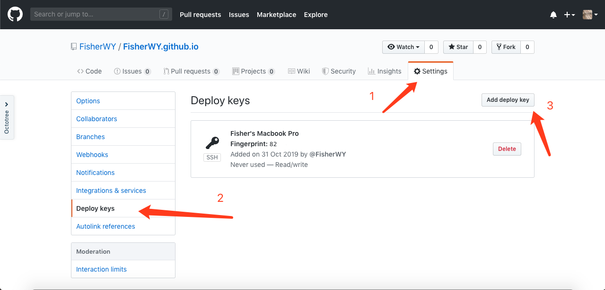

从GitHub迁移Hexo博客
博客项目重启之后，鉴于GitHub的访问速度，我便想着将博客迁移到服务器上。经过一番研究之后，我成功地实现了博客的迁移，并且Github和阿里云服务器能同步更新博客。
###1. 所需环境一览
本地环境：
- 由于之前在GitHub上搭建过博客，因此本地留有Hexo的根目录，我的Hexo根目录文件夹名称为blog。
- 系统：macOS Mojave
- 环境：Git-v2.17，Node.js-v8.9.3，hexo，ssh
- 任务：创建RSA公钥，本地生成静态网页文件，用Git同时推送到Github和阿里云服务器上
阿里云服务器环境：
- 系统：Centos7
- 环境：Git-v1.8，Node.js-v6.17.2，Nginx（推荐更新为最新版，我使用该版本没什么问题）
- 任务：创建Git仓库用于储存静态网页文件，使用Nginx作为网页服务器
Github环境：
- 环境：保存本地环境中的RSA公钥
- 任务：创建Git仓库用于储存静态网页文件，使用Github Pages设置网页主页
###2. 云服务器的配置
各个环境所需的依赖请自行安装，在此就不贴出安装步骤了
2.1 创建新用户，配置Git
创建一个新用户用于网站的配置（推荐），也可以使用现有用户
1 | useradd fisher # 添加名为fisher的新用户 |
找到如下行，在下面添加一行
1 | # Allow root to run any commands anywhere |
保存并推出，将文件权限改回来
1 | chmod 400 /etc/sudoers |
2.2 添加RSA公钥
在本地电脑上打开终端，使用Git Bash创建密钥。如果要使用已有的密钥，这一步可以跳过
1 | ssh-keygen -t rsa # 一路回车即可 |

注意：该密钥不可以泄漏给其他人，一旦泄漏服务器很危险。这里生成的key仅用做演示，因此没有打码
切换至“fisher”用户，创建“.ssh”文件夹以及“authorized_keys”文件并将刚刚生成的“key.pub”中的内容复制粘贴到里面
1 | su fisher |
修改“authorized_keys”的权限
1 | cd ~ |
2.3 测试到服务器的连接
使用ssh连接到服务器
1 | ssh fisher@ADDRESS # ADDRESS是你服务器的IP地址 |
如果不需要输入密码就能连上服务器，则说明你的RSA公钥配置成功
3. Github仓库的配置
由于之前我在搭建Github Pages的时候没有使用RSA公钥，我的部署全部是用用户名和密码的。因此本次迁移，我顺便把Github的博客仓库也配置上RSA公钥
3.1 添加RSA公钥
打开位于Github上面的博客仓库，点击“Settings”，点击“Deploy Keys”，点击“Add deploy key”

然后将“key.pub”中的内容粘贴进去，勾选选项，点击确认并输入密码

到此，Github上的RSA公钥就配置完成了
4. 云服务器的Nginx配置
4.1 创建网站根目录，配置Nginx
以fisher用户登录服务器，在用户根目录下创建网站根目录
1 | mkdir /blog |
在Nginx的配置文件中添加网站目录
1 | sudo vim /etc/nginx/nginx.conf |
如果使用HTTP协议，则在80端口中的server添加网站目录。如果使用HTTPS协议，则在443端口中添加网站目录
1 | server { |
重新载入Nginx，使配置生效
1 | service nginx reload |
4.2 建立Git仓库
创建一个Git裸库，只用于保存Repository信息
1 | cd ~ |
使用Git-Hooks同步网站根目录，这里使用的是Git中的“post-receive”，当有Git收发的时候会调用该脚本，自动将最新内容同步到网站根目录中
1 | vim blogit.git/hooks/post-receive |
将以下语句写入文件中
1 |
|
保存并赋予执行权限
1 | chmod +x /home/fisher/blogit.git/hooks/post-receive |
5. 本地配置
5.1 配置”_config.yml”
打开位于Hexo博客根目录下的“_config.yml”文件，找到“deploy”并修改
1 | deploy: |
5.2 部署
至此，整个博客的迁移工作只剩下最后一步，就是重新部署一次了，以后按照以前的部署步骤来就可以了
1 | hexo clean |
6. 总结
迁移的教程最初来自此处：StaunchKai的博客。非常感谢StaunchKai提供的教程！
整个迁移工作下来，重点其实只有3个：
- 在云服务器上配置RSA公钥
- 建立网站根目录，配置Nginx的网页根目录
- 建立博客仓库，与网站根目录挂钩，同步更新
掌握了这3个重点的操作之后，其他的操作其实很简单
于是乎在云服务器上，我又重新开始记录我的日常点滴